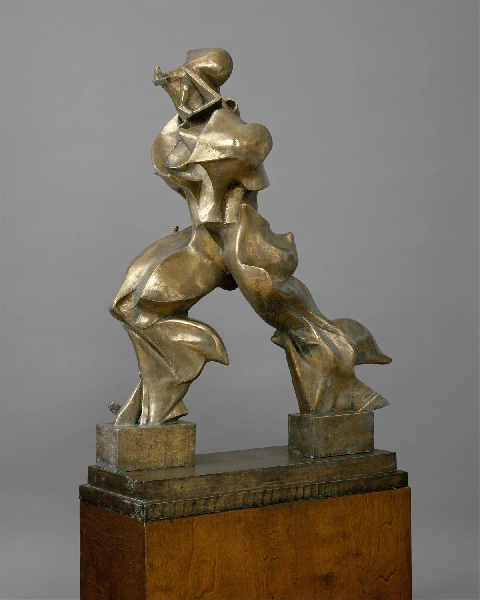
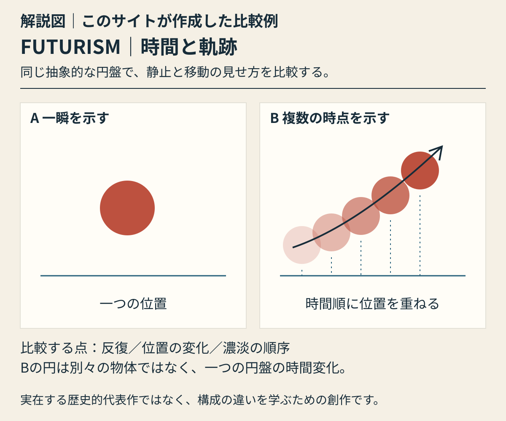

歩行の輪郭を、後方へ引き延ばす。
大きく開いた両脚と後ろへ流れる面が、歩行する人体を連続する運動として見せます。
本文試作・実作品画像1点収録 / 代表画像セットは整備中 · 2026-11-01
歴史・運動（この項目はイタリアの展開を対象）
未来派（イタリア未来派を中心に）
LOOK AT THE WORK / 実作品を見る

画像を表示できませんでした。下の所蔵元リンクから作品を確認できます。
FUTURISM / SCULPTURE · 原作1913年／この個体の鋳造1950年
Umberto Boccioni（ウンベルト・ボッチョーニ） / The Metropolitan Museum of Art
Met所蔵1990.38.3。原作1913年、この個体は1950年鋳造のブロンズです。像と両足の台は全体が見えますが、木製展示台は下端が写真の外へ続きます。写真の別角度を別作品として数えません。
大きく開いた両脚と後ろへ流れる面が、歩行する人体を連続する運動として見せます。
なめらかな凸面と深いくぼみに明暗が分かれ、輪郭だけでなく立体の表面でも速度感を作ります。
この写真は1950年鋳造のブロンズ個体。原作の年1913と、撮影された鋳造物の年を分けて読みます。
形と明暗は掲載写真の観察です。作者・材質・原作年と鋳造年はMetの個別記録に基づき、同館が未来派の速度・機械的な力と結び付けて解説する作品として選定しています。
Umberto Boccioni, Unique Forms of Continuity in Space, 1913, cast 1950. The Metropolitan Museum of Art, Bequest of Lydia Winston Malbin, 1989 (1990.38.3). Public Domain / CC0.
所蔵元の作品解説 ↗所蔵番号1990.38.3。原作品：個別Public Domain表示。配信写真：当該媒体のOpen Access指定とMet CC0方針。確認日 2026-11-01。
公式配信の原JPEGは無加工で保持し、拡大リンクから取得できます。ページ表示には縦横比と全画面を保った縮小WebPを使用（切り抜き・色補正なし）。原JPEGと各表示画像のサイズ・SHA-256を権利台帳に別記録。撮影者名は未確認のため推定しません。
美術館のOpen Access方針 / CC0 / 収録画像の権利台帳
US museum assessment, not a claim of universal jurisdictional guarantee
機械や都市、速さを、芸術でどう表せるでしょうか。未来派は、これらを新しいテーマにして、絵画に加え、詩・彫刻・衣服・室内まで作り替えようとした運動です。斜めの線や、丸・四角などを使った見た目だけを指す名前ではありません。
1909年にマリネッティ（Marinetti）が発表した宣言を出発点に、印刷物や活動を通じて主張を広めました。戦争をたたえる考えや、マリネッティとファシズム（国家や指導者への服従を強く求める独裁的な政治思想）との結び付きも、切り離せません。ただし、参加者全員が同じ政治的立場だったわけではありません。女性の参加や、運動の中での違いも扱います。
以下は観察のための問いです。すべての作品に共通する固定ルールや、未取得画像の実見結果ではありません。
決まった配色を探すより、何で作られているかを見ます。ブロンズ、印刷した紙、縫い合わせた布では、色が生まれる仕組みが違います。
『Zang Tumb Tumb』では、言葉の意味に加え、音や文字の見た目にも注目します。文章の作者と、文字の形や配置を設計した担当者を分けて確認します。
ボッチョーニ（Boccioni）の彫刻では、身体と周りの空間を結び付ける形が重要です。変形した輪郭を、単なる飾りや機械の姿としてだけ見ないようにします。
1930年代の航空画では、上空から見下ろす視点が大切です。初期の、動きを強調する表現だけが、運動全体に共通する構図ではありません。
ORIGINAL EXPLAINER · 自作解説図
Aは一つの円盤の静止位置。Bは同じ円盤の五つの時点を濃淡と位置の変化で重ね、移動の軌跡を示す。
実在する代表作の画像ではありません。見るポイントを学ぶために、このサイトが作った例です。

解説図｜このサイトが作成した比較例。Aは一つの円盤の静止位置。Bは同じ円盤の五つの時点を濃淡と位置の変化で重ね、移動の軌跡を示す。 実在する歴史的代表作の画像・復元ではなく、特定作家の模倣でもありません。様式全体の定義や優劣を示す図ではありません。
考え方を確かめる美術館の資料 ↗ · 参照先がこの図を制作・監修したわけではありません。
解説図を大きく開く ↗作品の知名度や画像の入手しやすさだけで選びません。以下は理想代表候補と、その検証状況です。画像の利用許諾を確認できていないものは掲載していません。
掲載したのは、Boccioniのブロンズ像1点です。1913年の原作と、1950年に金属を型へ流してつくった、この像を区別しています。文字の表現、衣服、都市への広がりを比べる3〜5点のセットは、まだ完成していません。
彫刻・身体と空間
動く身体と、その周りの空間を、一つの形に結びつけた例です。本や平面で速さを表す方法とは異なる、立体作品の役割を示します。
1913年制作のブロンズ原作ではなく、作者の死後に鋳造（ちゅうぞう、型に金属を流して作ること）されました。館の一部の古い翻訳本文は1949年としますが、現在の見出しと2016年の館の研究に従い、1950年と記します。鋳造を進めたBenedetta Marinettiと、古い翻訳が挙げるF. T. Marinettiを混同しません。MoMAにある別の鋳造個体とも区別します。
個別の根拠資料 ↗詩・タイポグラフィ・書物
読む言葉、音、目に見える配置を結びつけた例です。機械化された戦争の経験を扱っています。自由に文字を置く技法だけを、題材から切り離して見ないようにします。
題名の1912は、題材になった戦争の年です。出版は1914年です。MoMAは版数不明と記しています。Getty所蔵本や、MoMA図書館にある別の個体の寸法を、この本の寸法として使いません。
個別の根拠資料 ↗衣服・素材・生活の設計
布で作り、身に着ける品です。この運動が、絵画以外の日常の暮らしへも広がったことを示します。
綿の裏地にウールを継ぎ合わせた作品で、個人蔵です。教材で示された作者名は、デザインの担当を指します。工房全体の説明だけを根拠に、Rosettaがこの服を縫ったとは断定しません。
個別の根拠資料 ↗絵画・航空画・公共空間
空からの視点を扱う、公共の壁画の一部です。初期の男性作家による彫刻だけで、この運動の歴史全体を説明しないために選びます。
パレルモ郵便局にある、通信を題材にした5点の連作の一つです。カンヴァスに、テンペラとエンカウスティック（ろうを使う技法）を用いています。国全体の航空への関心や、公共の場所に置かれたことも、一緒に考えます。
個別の根拠資料 ↗COMPARE
ロシア構成主義（Russian Constructivism）とは、斜めの配置や、印刷物への広がりが似て見えることがあります。それでも、運動の始まり、社会に対する目的、一人ひとりの政治的な主張は、別に確かめます。この項目はロシア未来派の説明を兼ねるものではありません。また、バウハウス（Bauhaus）のような学校とも区別します。
項目を横に並べる ↗READ TODAY
同じ彫刻の形でも、最初の原型、作者の死後に金属で鋳造（ちゅうぞう：溶かした金属を型に流して作ること）した物、後年の複製では、材料や制作時期が違います。メトロポリタン美術館（Met）の研究は、鋳造と展示によってボッチョーニの作品が知られていく過程を示しています。現代の広告にスピード感があっても、似ているだけで未来派から直接影響を受けたとは断定しません。
概要は以下の所蔵機関・制作者の説明と、分析者自身の調査を参照。検索から返却された本文とページ直接閲覧は調査台帳で区別しています。代表作の個別裏付け、実画像取得、作品と写真の商用条件は別々の確認事項です。
この項目の収録実画像：1点（図鑑全体：24点）。参照・関連実作品はこの項目0点（図鑑全体2点）。代表作品画像セットの数には含めません。